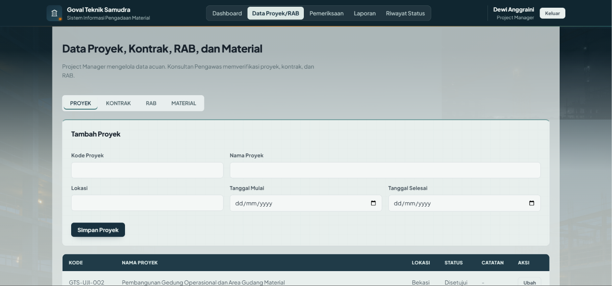
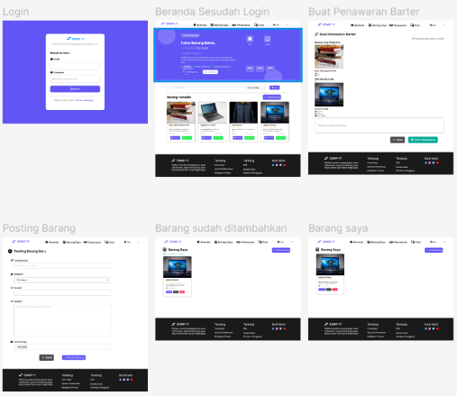
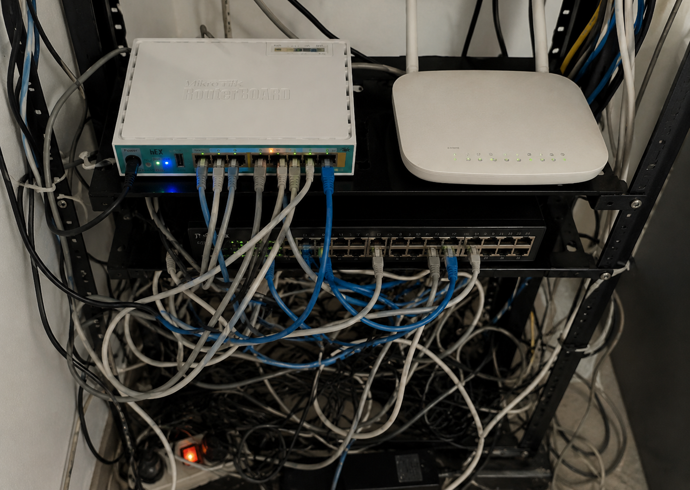
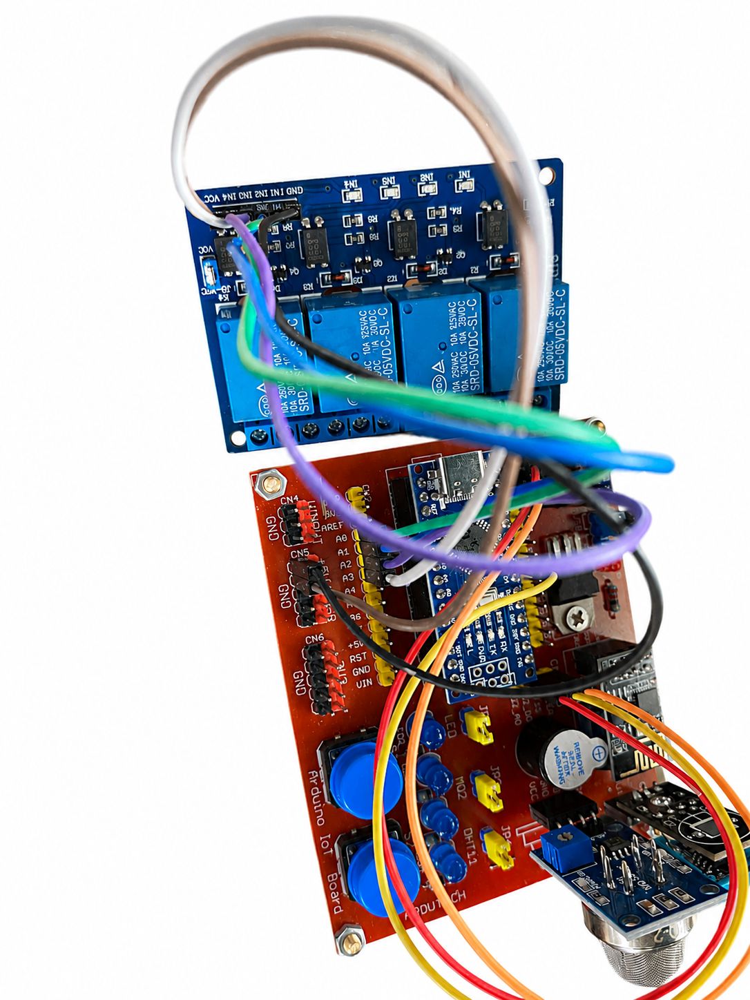

Perancangan Sistem Pengadaan Material Proyek Konstruksi
Merancang sistem informasi berbasis web untuk mendukung proses pengadaan material proyek konstruksi, meliputi pengelolaan data proyek, kontrak, RAB, pengajuan material, verifikasi, pemesanan, hingga pemantauan status pengadaan.

Analisis & Perancangan Sistem
Perancangan sistem menggunakan Use Case Diagram, ERD, LRS, dan mock-up menggunakan StarUML dan Figma.

Perancangan & Konfigurasi Jaringan
Perancangan topologi, pengalamatan jaringan, konfigurasi switch, dan routing.

IoT Smoke Detection & Alert System
Prototype sistem pendeteksi asap berbasis IoT menggunakan Arduino Nano, Blynk, dan Wokwi dengan alarm sebagai peringatan.
PENDIDIKAN
Education
Universitas Esa Unggul Bekasi
S1 Teknik Informatika
IPK 3,48 / 4,00SMK Dinamika Pembangunan 1 Jakarta
Teknik Komputer dan Jaringan
PENGALAMAN
Experience
Proyek Pemrograman Web
Bina Sarana Informatika
- Mengembangkan proyek web secara berkelompok menggunakan PHP, Java, dan CSS.
- Membangun dan mengelola basis data untuk mendukung kebutuhan aplikasi.
- Menyusun makalah dan dokumentasi proyek.
Program Pelatihan MikroTik
SMK Dinamika Pembangunan
- Menentukan spesifikasi perangkat dan merancang topologi jaringan.
- Merancang pengalamatan jaringan serta melakukan konfigurasi switch.
- Melakukan konfigurasi routing pada perangkat jaringan dalam satu Autonomous System.
KEMAMPUAN PERSONAL
Soft Skills
HUBUNGI SAYA